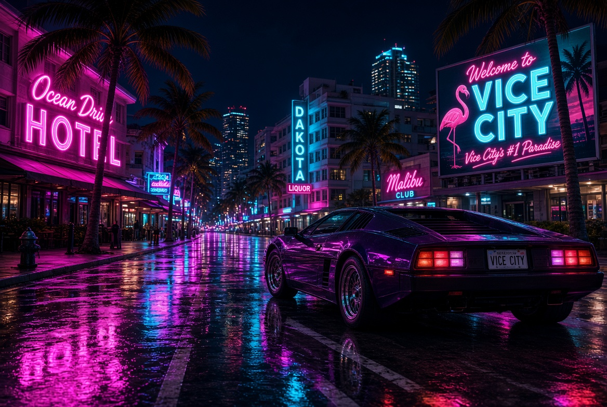
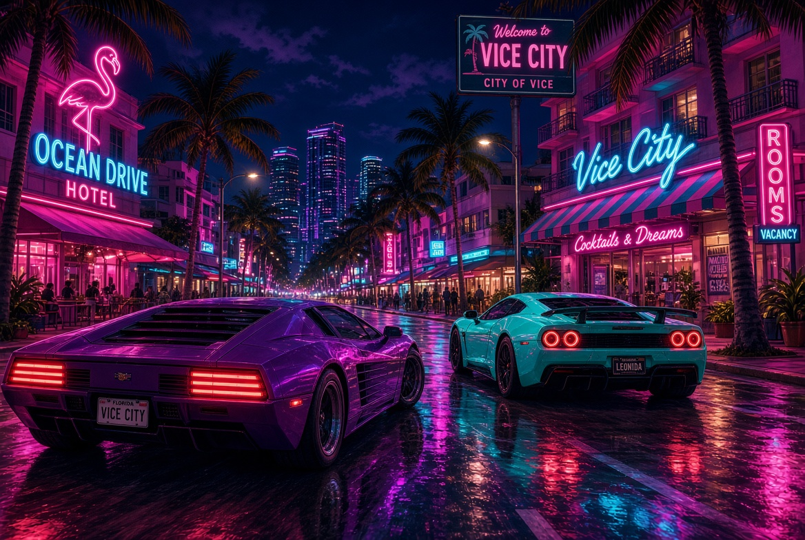
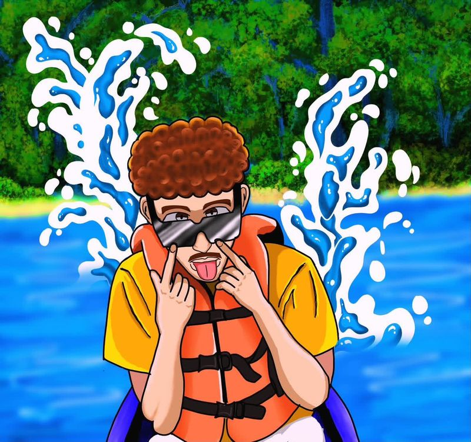

- Primer fin de semana de GTA 6: récord de $3,790 millones (en inglés)
- Glitches de GTA 6: dinero, primera persona y más (en inglés)
- GTA 6 ya está disponible: guía del día de lanzamiento (en inglés)
- Semana de lanzamiento de GTA 6: hora de desbloqueo y más (en inglés)
- GTA 6 supera $1,000 millones en preventas y llega un parche (en inglés)
- La pre-descarga de GTA 6 ya está activa y llega un festival en Miami (en inglés)
- Galería de lanzamiento de GTA 6, Zelnick y la llamada de Take-Two (en inglés)
- La pre-descarga de GTA 6 se adelanta al 10 de nov (en inglés)
- Calendario de lanzamiento de GTA 6 (en inglés)
- GTA 6 en South Park, el score de Justice y Edge (en inglés)
- GTA 6 pesaría 210 GB (en inglés)
- GTA 6 se apodera de Miami (en inglés)
- Trucos GTA 5: los 35 códigos verificados
- Mira más en Yea I Really Did It
GTA 6 · Ya disponible · PS5 y Xbox Series X|S
VICE CITY CODES
Noches de neón • Guías de Leonida • GTA 6 ya disponible
Estado de GTA 6
Ya disponibleSalió el 19 nov 2026 en PS5 y Xbox Series X|S
Nuevo Lo más nuevo · 22 nov 2026 Primer fin de semana de GTA 6: récord de $3,790 millones (en inglés) Ventas oficiales del primer día, sesiones de 8 horas, el festival de Miami, el error CE-108255-1 y rumores sin confirmar. Leer lo últimoGTA 6 ya está disponible
Salió el 19 de noviembre de 2026 a la medianoche hora local • PS5 y Xbox Series X|S
Trucos y códigos
Trucos de GTA 5
Todos los trucos verificados del modo historia de GTA 5 para PlayStation, Xbox, PC y teléfono, con botones para copiar los códigos.
Ver los trucos de GTA 5Trucos de GTA 6
GTA 6 ya tiene trucos: 17 códigos verificados, con las combinaciones de botones. Funcionan después de terminar la historia y, al usarlos, se desactivan el guardado y los trofeos/logros en esa sesión.
Ver los trucos de GTA 6 (en inglés)YouTube
-
La física de GTA 6 está bien 🙂 (Está despedido)
Su propio clip de GTA 6: un auto rojo despega, da vueltas en el aire, luego choca y rueda. Termina diciendo que está despedido. El video se carga desde YouTube (modo de privacidad mejorada) solo cuando pulsas reproducir. Política de privacidad.
Guías de Vice City


Prepárate para el lanzamiento
- Actualiza tu consola y libera espacio de almacenamiento.
- Revisa las ediciones y precios en el sitio oficial de Rockstar.
- Espera una descarga grande de mundo abierto.
Creador destacado

Arte de @corupt3d
Obra destacada de @corupt3d. Mira más de su trabajo en Instagram.
Seguir en InstagramAcerca de
Guía independiente hecha por fans sobre Grand Theft Auto VI, Vice City y Leonida. No estamos afiliados con Rockstar Games ni con Take-Two.
Solo publicamos información verificada. Siempre confirma con las fuentes oficiales.